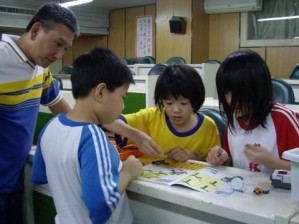
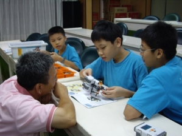
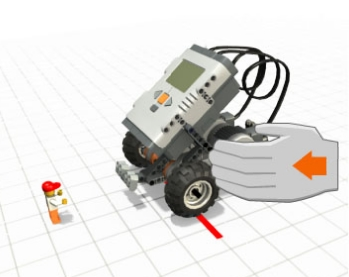
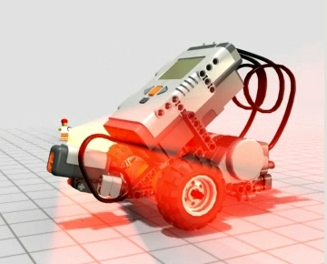
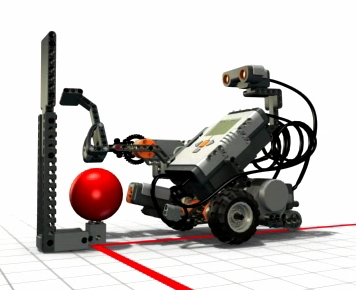
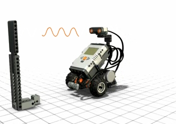

補充教材
補充教材
|
|
|
週次 |
課程名稱 |
任務 |
教學內容 |
|
1 |
機器人介紹 |
為機器人命名 |
開啟MINDSTORMS Edu NXT程式 |
|
2 |
步步危機1 |
直線前進不可撞到障礙物，且要最接近 |
NXT介紹,直線前進不可撞到障礙物(內定馬力75,只設定圈數或秒數) |
|
3 |
問題解決策略挑戰1 |
轉彎 |
用二個移動方塊來讓車子轉彎 |
|
4 |
步步危機2 |
通過的連續彎路 |
轉彎並利用控制圈數過關 |
|
5 |
問題解決策略挑戰2 |
自行設計關卡給別組,通過別組關卡 |
轉彎2(一正轉一反轉,轉彎弧度小) 學生自行設計出題給下一組(畫在壁報紙上)（限定道路寬度、不限角度） |
|
6 |
步步危機3 |
直線前進不可撞倒障礙物 |
使用觸碰感應器 |
|
7 |
問題解決策略挑戰3 |
使用觸碰感應器剎車或轉彎 |
設計一輛智慧型車子如果碰到障礙物就自己繞過去 |
|
8 |
步步危機4 |
直線前進不可撞到障礙物 |
加上距離偵測 |
|
9 |
問題解決策略挑戰4 |
摸不到的機器人 |
摸不到的機器人(需先完成概念圖) (距離偵測) |
|
10 |
步步危機5 |
用音量控制前進速度 |
使用聲音感應器 |
|
11 |
問題解決策略挑戰5 |
聲控機器人 |
聲控機器人(需先完成概念圖) |
|
12 |
步步危機6 |
直線前進不可撞到障礙物 |
加上光偵測 |
|
13 |
問題解決策略挑戰6 |
不會掉下懸崖的機器人 |
懸崖(需先完成概念圖) |
|
14 |
問題解決策略挑戰7 |
來回走不會掉下懸崖的機器人 |
來回走不會掉下懸崖的機器人(需先完成概念圖) 後退並轉彎90度 |
|
15 |
問題解決策略挑戰8 |
遇黑線停下來，沿線走 |
沿線走(遇黑右轉遇白左轉) |
|
16 |
自走式機器人1 |
沿線走 |
沿線走(遇黑右轉遇白左轉) |
|
17 |
問題解決策略挑戰9 |
迷宮 |
二個感應器 |
|
18 |
問題解決策略挑戰10 |
迷宮 |
二個感應器2 |
|
19 |
遙控機器人1 |
遙控機器人通過挑戰2之關卡 |
（立體迷宮） |
|
20 |
遙控機器人2 |
遙控機器人通過挑戰2之關卡 |
|
|
 |
 |
|
 |
 |
|
 |
 |